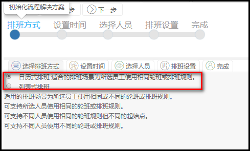
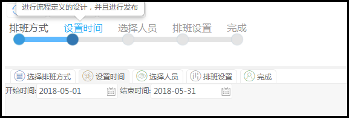
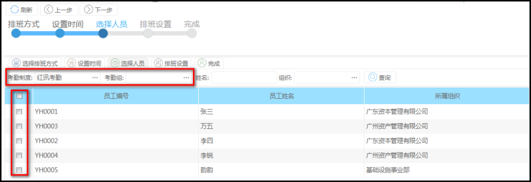
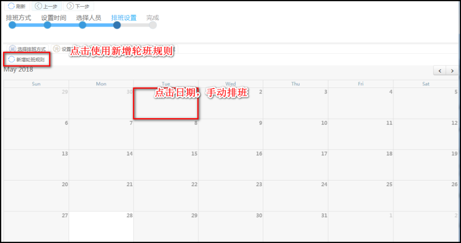
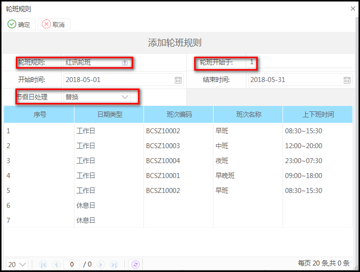
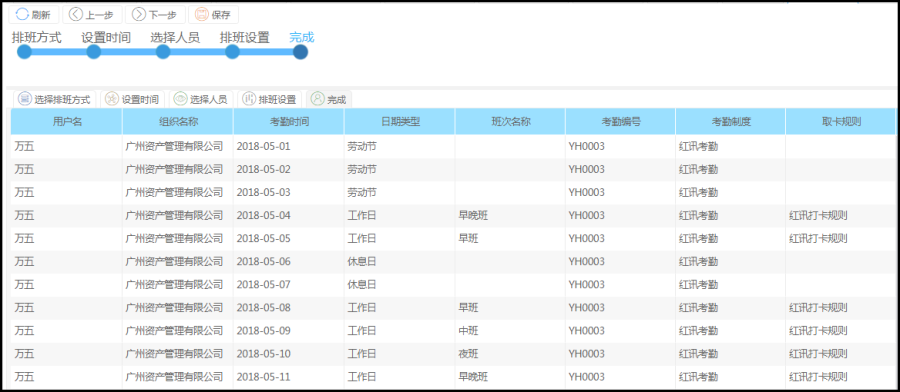

功能描述
自定义排班，给具体员工设置具体时间段内的具体排班方式
操作步骤
菜单路径：考勤管理--->排班管理---->排班向导
1>排班方式
日历式：所有员工统一使用一个日历界面，
列表式，每一个员工一行排班，方便对个别员工的班次进行调整

2>设置时间
设置排班开始日期，结束日期，方便考勤计算时选择考勤日期选择这个时间段排班的员工进行计算

3>选择员工

4>排班设置

5>点击使用轮班规则

‘轮班开始于’是指排班从星期几开始，
‘节假日处理’：1>替换：系统设置的法定假日会把原本排班的替换成休息，如5/1早班可以替换成‘五一’节日
2>不替换：是指节假日不会覆盖原来的排班信息
3>顺延：系统设置的法定假日把原本的排班的替换成休息，当原本的班次顺延往后排班
如需要修改某个日期的排班，我们可以手动修改，左建单击对应日期，在弹框中选择班次
点击完成，列表展示着为该员工的排班信息
